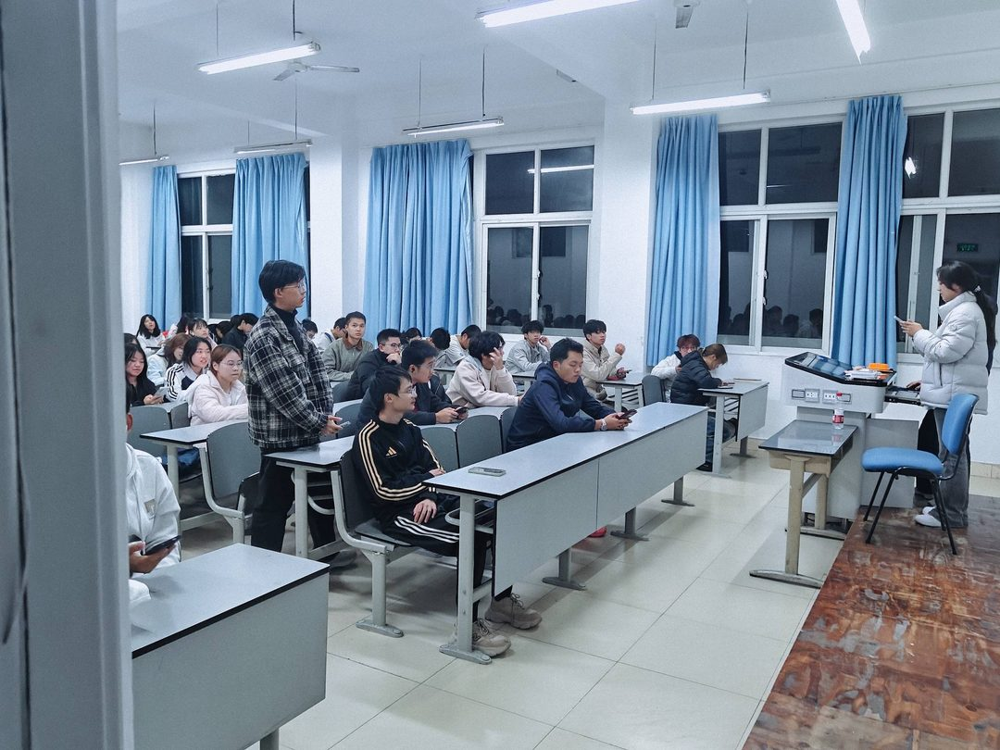
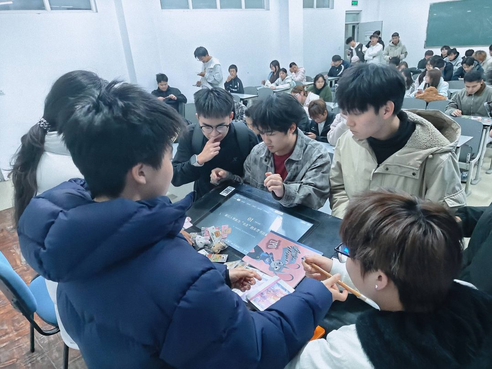
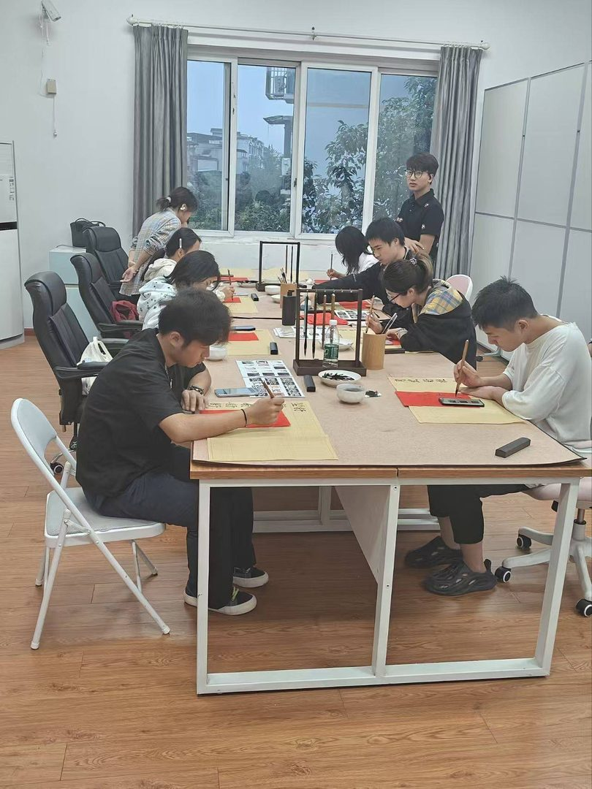
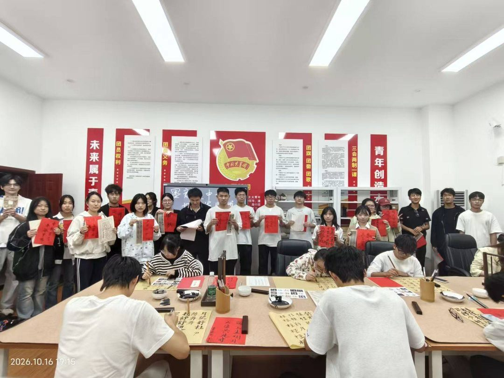
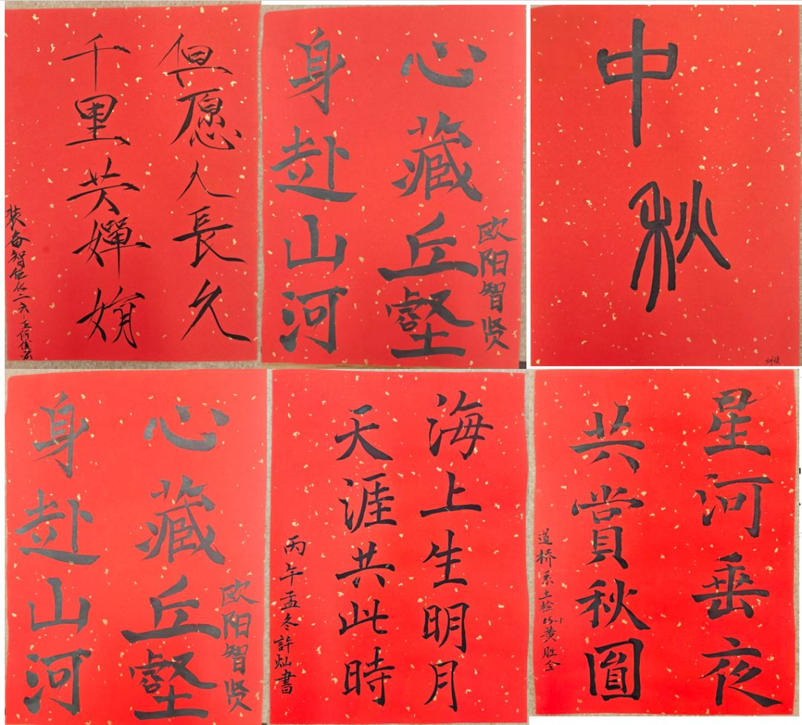
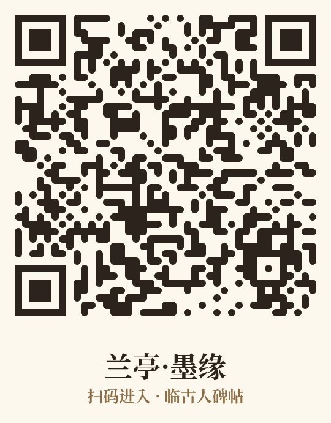

兰亭
书画
兰亭书画协会
名家
碑帖
加入
「初学分布，但求平正；既知平正，务追险绝；既能险绝，复归平正。」
—— 唐 · 孙过庭《书谱》
兰亭
兰亭书画协会
临古人碑帖 · 展少年风华
11 位名家
13 块碑帖
8 则名句
浏览名家
我要加入
壹
名家研读
左右滑动 · 点开头像看生平与代表作
贰
碑帖真迹
全部为传世善本拓本 / 馆藏真迹扫描，可点开看大图
×
正在载入碑帖索引…
正在载入碑帖索引…
🖌
没有找到相关碑帖
看全部
!
载入失败
重试
叁
名句赏析
书家箴言，字字有来历
肆
协会动态
知识竞赛 · 中秋笔会 · 社员作品

知识竞赛 · 抢答环节

知识竞赛 · 发放奖品

中秋笔会 · 书写「月」字

中秋笔会 · 社员与作品合影

中秋笔会 · 社员作品
伍
加入我们
扫码联系 · 一起写字

愿与同好者，共临一帖，同写一字。
扫码联系我们，了解入会方式。
联系方式 / 联系人：待补充
×
‹
›